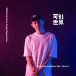

5/29提報流程 & 工作分配
大家好～以下是有關此次提報的詳細資料，請大家都閱讀過唷！
————————————————————————————-
流程
提報地點：經典椅教室
提報時間：5 / 29 星期五
出席教授：唐教授 & 董教授
時間表： (董老師那時間待定）
準備時間 12:45 - 1:30（董老師lab 12:30前就會開始準備）
唐老師lab （直播）
施佩伶 1:30 - 2:15 (35min+10minQA)
俞靜庭 2:15 - 3:00 (35min+10minQA)
李紹羽 2:00 - 3:30 (20min+10minQA)
3:30-3:45 休息（收直播用具）
董老師lab（無直播）
林雅筑 3:45 - 4:00 (15min)
陳語薇 4:00 - 4:15 (15min)
吳季庭 4:15 - 4:30 (15min)
————————————————————————————-
分工
*董lab對接窗口已po在line群組 ！若需要詳細資訊可私訊
 Joseph
Joseph
熱大杯拿鐵兩杯 - 董lab
時間表兩份 - 董lab 、
Joseph
評分表兩份 - 董lab 、
Joseph
點心兩份 -
Joseph
購買點心與咖啡記得在報帳表單上請款
場佈 - 董lab 、
 Daisy
Daisy
 Ann
Ann
準備教授名牌（電腦印字，A4折三折）
搬長桌兩張（可以去系辦旁邊的教室取得）
擺經典椅子（以the Chair、Chair One為優先，次要可以擺Y Chair）
會議紀錄-
Ging陳筱珺
 Tiyu蘇堤瑜
Tiyu蘇堤瑜
計時&舉牌 -
 Wei-An
Wei-An
錄影 & 直播 -
Tiyu蘇堤瑜

鄭博允
 Cara
Cara
 Ting
Ting
*直播的種種請先跟 cara 練習過，tiyu 如果可以也可以多了解一點！
*直播的種種請先跟 cara 練習過，tiyu 如果可以也可以多了解一點！
攜帶紅筆藍筆各兩支，給兩位教授
錄影器材（確認電量、記憶卡）
簡報筆一組
延長線一組
轉接頭（vga/hdmi對lightning/type c）
用完後歸還助理室！
————————————————————————————-
未來的提報若有維持直播，將由
鄭博允
Tiyu蘇堤瑜
最後，祝三位同學提報順利！！
最後，祝三位同學提報順利！！
👉請大家加入社團當天的直播社團 [05.29 DITL直播社團]
👉分享流程：
[ 第二次提報 ] 提報25分鐘＋15分鐘現場評審QA
13:30 - 14:10｜施佩伶 / 以服務設計思維優化AR體育競賽觀賽體驗：以Meleap公司之產品HADO為例
14:10 - 14:50｜俞靜庭 / 以服務設計思維建立標準化人員服務SOP：以新北市長照巴士司機為例
[ 第一次提報 ] 提報15分鐘＋10分鐘現場評審QA
14:50 - 15:15｜李紹羽 / 運用服務設計思維提升共享電動機車之城市旅遊移動服務：以 GoShare 共享電動機車為例
15:15 - 15:30｜整體 線上文字 QA
☝️直播前
明天會在「直播社團、DITL粉專」發布「專案簡介貼文」，作為粉專宣傳，也讓參與者一加入社團可以預先了解專案。
✌️提報過程中
發表者「不會」在影片中回應參與者的線上留言，但是會有小鞭（aka 姜）
回覆酸民留言做簡單的即時回應和互動，並鼓勵參與者統一在「專案簡介貼文」下方回應和提問，當然也歡迎大家在直播留言和參與者互動～交流交流～👌提報後
發表者會在「提報後、影片刪除之前」在「專案簡介貼文」下方統一用文字回應QA，或視情況另外發一篇文說明（視情況啦），大家也可以看看參與者問了什麼問題～學習學習～
若有不清楚的地方歡迎提出唷！